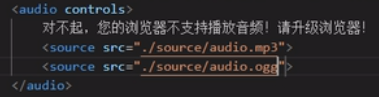
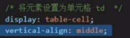

设置网页字符编码，如：charset="UTF-8"
设置网页搜索引擎关键字，如：name="keywords" content="HTML,前端,css3"
设置网页描述，如：name="description" content="这是一个前端学习网站"
设置网页自动跳转，如：http-equiv="refresh" content="3;url=https://www.baidu.com"
设置完美视口：name="viewport" content="width=device-width, initial-scale=1.0"
表示网页的标题
表示引入其他文件，如：rel="stylesheet" href="reset.css"
1.href打开链接：
有具体网址，如：href="www.baidu.com"
有id位置，如：href="#box1"（如果就是#那么就是返回顶部）
有文件位置，如：href="./reset.css"（./表示当前目录，可省略；../表示上一级目录；../../表示上上级，以此类推）。
有动作，如：href="javascript:;"
2.target打开方式：target="_self"为默认值，当前页面打开；target="_blank"为新页面打开。
1.src：图片地址，可以是外部网站图片也可以是内部服务器的文件地址。
2.alt：图片描述，无法加载时显示或者给搜索引擎搜索。
3.width和height：设置宽高，只改一个时会自动缩放以保持比例。
4.图片格式：
（1）jpeg（jpg）：支持的颜色比较丰富，不支持透明效果，不支持动图，一般用来显示照片。
（2）gif：支持的颜色比较少，支持简单透明，支持动图，一般用来显示颜色单一的图片或动图。
（3）png：支持的颜色丰富，支持复杂透明，不支持动图，一般用来显示颜色丰富，复杂透明的图片（专为网页而生）。
（4）webp：这种格式是谷歌新推出的专门用来表示网页中的图片格式，它具备其他图片格式所有的优点而且还特别小，但是兼容性不好。
（5）base64：将图片用base64编码，这样可以将图片转为字符，通过字符的形式引入图片，一般都是需要和网页一起加载的图片才会使用。
1.src：音视频地址。
2.controls：无值属性，决定用户是否有控制播放的权利。
3.loop：无值属性，决定是否循环播放。
4.autoplay：无值属性，决定是否自动播放（大部分浏览器为了用户体验不会直接一上来放，一般要点击播放后再刷新才会自动放）。
5.新的引入方式（优点是有错误提示和多格式兼容）：

1.src：网页地址，可以是外部网站也可以是内部服务器的网页地址。
2.width和height：设置宽高。
3.frameborder：指定内联框架的边框（0为无，1为有）
1.使用table标签建表，然后用thead tbody和tfoot把表分为三个主体，再用tr td分别设置行和单元格。
注意：
1)thead中的td可以换成th，表示表头的单元格，默认有加粗居中效果。
2)表格中绝对存在tbody标签，如果没有写，浏览器会把tr标签自动放到新建立的tbody中去。
3）thead tbody和tfoot的顺序不管代码顺序怎么写永远不变。
2.直接使用table tr td标签（浏览器会默认建立tbody标签并把tr放进去）。
1.设置位置：
1）可以在table标签里直接设置一些常规样式，如：
2）在style标签里可以单独设置table里面各个标签的样式。
2.有关单元格合并的属性：
1）rowspan=""; 设置水平方向单元格的合并。
2）colspan=""; 设置垂直方向单元格的合并。
3）注意：合并前要先把被合并的那个删了，不然会把其他单元格挤出去。
3.有关边框间距的属性：
1）border-spacing 指定边框之间的距离,值为px。
2）border-collapse：collapse 设置边框为双线合并。
1.text-align 设置内容水平对齐方式（默认左对齐，详细参考首页的该样式）。
2.vertical-align 设置内容垂直对齐方式（默认居中，详细参考首页的该样式）。
3.其他应用：可以利用该性质，将父元素转换为单元格状态，然后设置对齐方式实现快速居中或其他对齐，如：
